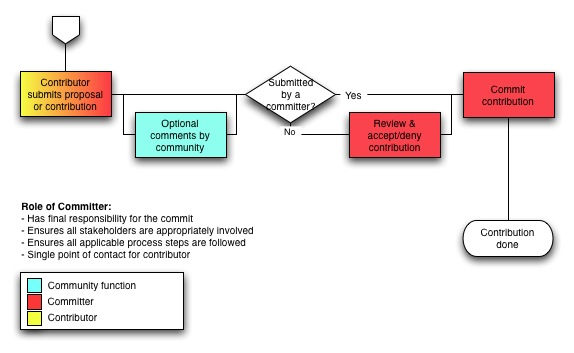

How Do I Contribute?
A contribution consists of code or supporting features such as the following items:
- Bug fixes, enhancements, features, or new modules
- Documentation, artwork, or other content
- Improvements to the build process or configurations
Contents
- Contribution Process
- Submitting Contributions
- Use Cases
The contribution process distinguishes between a committer who can contribute directly to the repository and a contributor who requires a committer to sponsor the contribution. The basic process for both committers and contributors is described in the following figure.

To contribute, follow these steps:
- Sign and return the Sun
Contributor Agreement (SCA)
- Apply for a community login on java.net
- Become familiar with the community and projects.
- Participate in your area of interest through discussions, blogs, emails, change requests, and other venues.
- Submit your contribution.
If you are a committer, submit your contribution through Issue Tracker.
If you are a contributor, find a committer to work with you. The committer will work with you through the submission process to review and revise your contribution as needed. The following guidelines apply:
- You are expected to test your contribution as applicable and create test cases as needed.
- If accepted, your contribution is scheduled for integration and made available in a future release.
- You are expected to be available for any future maintenance work that might be needed.
Finding a Committer
If you do not have the authority to commit changes to the repository, you need to find a committer with which to work. To find a committer, try one of the following methods:
- As you get involved in
the project by way of mailing
list, forums, CRs, and blogs, you will encounter
committers who work in the area of your contribution. Email them and
ask if they will work with you. This is the
preferred method because it targets the most likely contributors and
keeps noise low.
- If you do not find a
committer with the above method, consider posting a
contribution proposal to the appropriate mailing list or forum to
see if a committer is interested. This method has the advantage of soliciting feedback from the community
on your proposal at the same time.
- If neither method is successful, email the appropriate module
owner (<link to list of module owners>) directly and ask if he
or she can recommend a committer. This is the least preferred method because
it puts a burden on the module owner and might not direct you to the best
suited committer.
Submit all contributions, whether code or other content, using the following procedure:
- Fill in the submission template.
- Package the contribution as a single zip or tar file, including the submission
template. If the contribution includes code, also include the following information:
- The code itself, including any tests. The code must adhere to the coding guidelines for the project and be packaged as a Subversion change package.
- New or changed documentation, if any.
- Test results, if any.
- A change description template that contains all the information necessary to describe the code.
- If the contribution includes code changes, include a link to a Subversion
diff or similar document.
- Submit the contribution through Issue Tracker using the following steps:
- Create a new issue in the Patch category.
- Select the appropriate module to which the submission is related.
- Attach the zip or tar file.
- Use the Issue Tracker description field to describe the submission.
- Add individuals, such as the committer with whom you are working, and any appropriate aliases to the notification list.
- Submit your contribution. You will receive a patch ID.
Submission Template
For all submissions, include the following information:
- Summary of the contribution
- Modules affected
- Committer who is handling the contribution
- Any other relevant details
A patch ID is generated and sent to you at the time of your submission. The module owner and committer, if any, is notified of your submission and will get in touch with you regarding further handling of your submission.
Change Description Template
For code changes, include the following information:
- Summary of the change
- Features added, reference the CR if one exists
- Bugs fixed, reference the CR if one exists
- Names of reviewers, reviewer emails, and reviewer areas
- Short documentation summary
- Short release note summary
- Build and configuration details
- Any other relevant details
- Description of how the change was tested
Note: List the features and bugs in the following format:
CR-number one-line-description
Use one line for each CR addressed to make it easier for the integrator and QA group to search for the bugs that they need to document, close, or verify.
Use cases for contributions are available here.